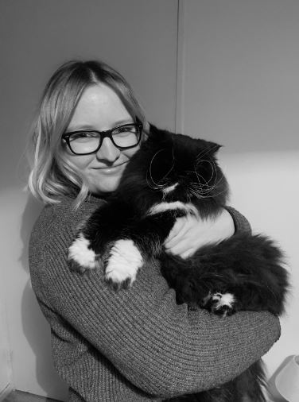
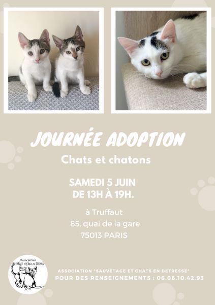

ETRE BENEVOLE
En septembre 2019, j’ai décidé de m’investir dans la cause animale en devenant famille d’accueil.
J’ai effectué de nombreuses recherches pour trouver l’association qui correspondait aux valeurs que je souhaitais porter.
Actuellement, j’ai le statut de bénévole et de membre du bureau.
J’occupe le poste de responsable de la communication, que ce soit sur Facebook ou Leboncoin, concernant les adoptions sur le pôle 49.
